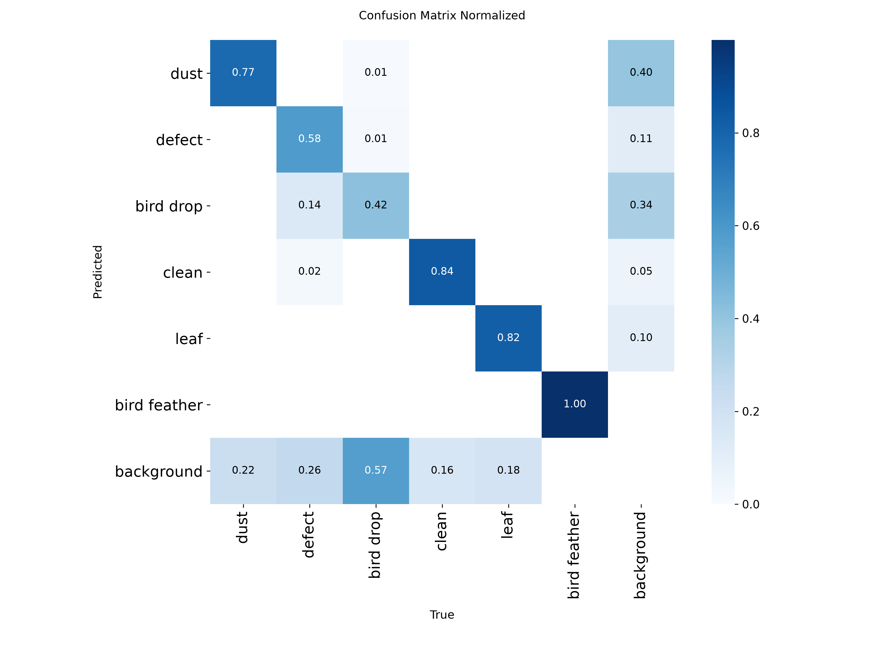
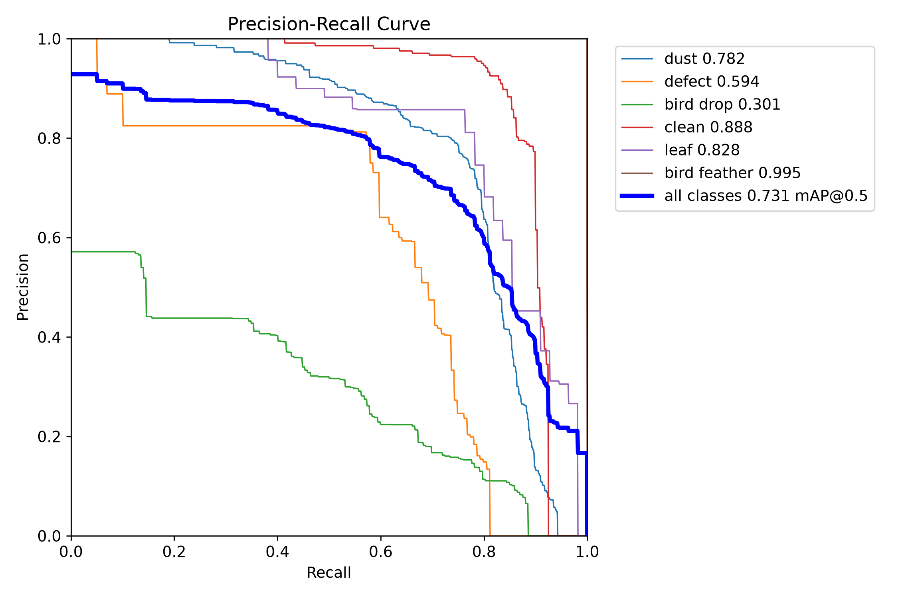
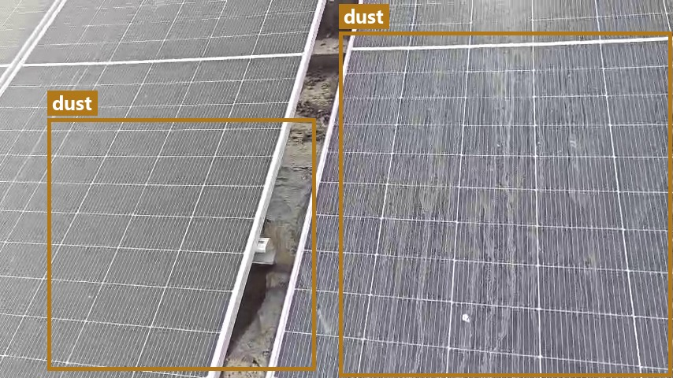
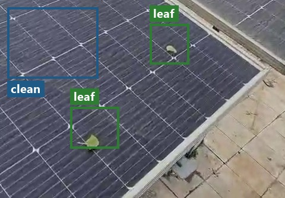

Soiling is one of the largest controllable losses in photovoltaic plants. A dust layer attenuates incident irradiance before it reaches the cell, and bird droppings or leaves create hard, localised shading that can drive hot spots and permanent damage. The usual responses — fixed cleaning schedules, or crews walking the arrays — are wasteful in dry weather and too slow after a dust storm, and on large plants cleaning labour dominates the O&M budget.
The idea of this project is that the drone should decide, not the calendar: an UAV inspects the plant photographically, a detector recognises what is actually on each module, and a rule layer picks the cheapest effective response — do nothing, blow it off with air, or wash with water. Cracks and hotspots are not a cleaning problem at all, so they are routed to maintenance instead. Contributions:
Soiling losses. Field studies report average soiling losses of 3–4% in temperate climates but far higher during dust-storm seasons in arid regions, with short-term losses exceeding 15% [1]. Because the loss profile is weather-driven, scheduling washes from fixed intervals systematically mistimes them.
Vision-based inspection. Single-stage YOLO detectors [2, 3] are the standard choice for UAV inspection because inference is fast enough for onboard deployment. Published solar datasets, however, each use their own small label space, and several contain heavy duplication from drone video stills and web-scraped images. This project therefore treats dataset construction as a first-class problem: merging, deduplicating, de-leaking and auditing before any training run.
Four public datasets were merged into one benchmark, merged_dataset_v3. The pool started at 24,257 discovered images; every image passed through the audit pipeline of Section 4. The label spaces were consolidated into six classes: the snow class was pruned — not relevant for Indian deployment sites — and all label indices re-mapped (preprocessing/remove_snow.py).
| Source dataset | Initial | Removed | Retained |
|---|---|---|---|
| Solar-Panel-Dust-Detection v2 | 13,793 | 1,674 | 12,191 |
| Solar Panel Detection v3 | 6,570 | 781 | 5,754 |
| 6rainstorm final project v1 | 3,592 | 1,646 | 1,946 |
| Aerial soiling (Soiling_DS_v2_14) | 302 | 40 | 262 |
| Total unified (7-class audit) | 24,257 | 4,104 | 20,153 |
| Snow pruned → final 6-class benchmark | — | 1,370 | 18,783 |
| Class | Appearance on the module |
|---|---|
| dust | Uniform particulate layer attenuating irradiance |
| defect | Cracks, hotspots, discolouration, delamination |
| bird drop | Concentrated deposits, localised shading |
| clean | Uncontaminated surface (baseline) |
| leaf | Foliage and vegetation debris |
| bird feather | Fine organic material on the glass |
Most of this project was data work, deliberately so. The merged pool contained unreadable files, byte-identical copies from drone video stills, and — the most dangerous case — the same scene in both train and test splits, which silently inflates accuracy.
The merged data is heavily skewed — dust and clean dominate, defects and feathers are rare. YOLOv11s [3] was trained with explicit countermeasures:
The detector's output only matters if it changes what the system does. Each detection carries a class, a confidence and a GPS tag from the drone's pose estimate, so the plan is issued per panel, not per plant; a rule layer maps it to one of four actions. Water — the costliest resource — is spent only when contamination is adhered to the glass.
| Metric | Value |
|---|---|
| mAP@50 | 73.13% |
| mAP@50–95 | 41.57% |
| Precision | 74.92% |
| Recall | 71.45% |
Per-class behaviour (Figure 2) is the most informative result. The classes that drive the cleaning decision are learned well: clean 0.84, dust 0.77, leaf 0.82 and bird feather 1.00 normalised accuracy, with per-class mAP@50 of 88.8% (clean), 82.8% (leaf), 78.2% (dust) and 99.5% (feather). One class lags: bird drop (0.42) is confused with defect — both appear as dark high-contrast blobs — and many bird-drop boxes are simply missed (background row, Figure 2). The detector was additionally exercised on field footage I collected myself at a rooftop array (Figure 4) — real-time frames with uneven dust and glare, exactly the input a UAV would see.
| Class | mAP@50 | Action triggered |
|---|---|---|
| bird feather | 99.5% | Air-blow |
| clean | 88.8% | No action — module skipped |
| leaf | 82.8% | Air-blow |
| dust | 78.2% | Air-blow (loose) / water (adhered) |
| defect | 59.4% | Maintenance alert, no cleaning |
| bird drop | 30.1% | Water wash |
Every class the decision layer depends on sits at 78% AP or above; defect routes to maintenance rather than cleaning, and bird drop remains the main target for future data collection.




Four inconsistent public datasets became one audited, snow-pruned 18,783-image benchmark, and an imbalance-aware YOLOv11s trained on it recognises the conditions that actually drive cleaning decisions — 73.1% mAP@50, with 88.8% AP on clean and 78.2% on dust — wired to an action policy an autonomous UAV or cleaning robot can execute. Next steps:
[1] K. K. Ilse et al. Air pollution and soiling implications for solar photovoltaic power generation: a comprehensive review. Solar Energy, 207, 2020.
[2] J. Terven, D. Córdova-Esparza. A comprehensive review of YOLO architectures. Machine Learning and Knowledge Extraction, 5(4), 2023.
[3] G. Jocher et al. Ultralytics YOLO11. Ultralytics, 2024. docs.ultralytics.com
[4] A. Dosovitskiy et al. An image is worth 16×16 words. ICLR, 2021.
[5] Source datasets: Solar-Panel-Dust-Detection v2; Solar Panel Detection v3; 6rainstorm v1 (Roboflow); Aerial Soiling DS v2_14.
[6] C. Zauner. Implementation and benchmarking of perceptual image hash functions. 2010.